I'm a
Biomedical EngineerAI EngineerResearcherData AnalystSoftware Engineer
A multidisciplinary AI engineer with hands-on experience in machine learning,
computer vision, multimodal deep learning, and intelligent systems for healthcare and
engineering applications. Skilled in building end-to-end AI solutions—from data acquisition and model
development to deployment. Experienced in both research and industry projects, with a strong track record in developing AI-driven
diagnostic tools, automated manufacturing systems, and decision-support platforms. Passionate about bridging
engineering, data science, and real-world problem-solving to create impactful, reliable, and scalable technologies.
Master of Science (MSc.) in Transportation Engineering
University of Alberta
Sep 2025 - Present · Edmonton, AB, Canada
Currently pursuing an M.Sc. in Transportation Engineering at the University of Alberta,
focusing on the application of AI to enhance safety and sustainability during winter conditions.
This work has equipped me with a diverse technical skill set, including statistical analysis, deep learning for
transportation applications, intelligent transportation systems (ITS), and remote-sensing data analysis.
Actively engaged in research and projects involving domain adaptation, video and image analysis,
and deep learning methods to improve transportation safety and operational efficiency.
AI in TransportationInternet of Things (IoT)Winter SafetyDomain AdaptationHuman-centred AIRWISITSSensor FusionStatistical AnalysisRemote SensingVideo Analysis
Bachelor of Science (BSc) in Systems and Biomedical Engineering
Cairo University
Sep 2020 - July 2025 · Cairo, Egypt
Completed a BSc in Systems and Biomedical Engineering, developing a broad and interdisciplinary foundation that integrates engineering principles with medical and biological sciences. The program strengthened competencies across AI, Medical Technology, Rehabilitation Engineering, Sports and Movement Analysis, Neuroscience, Digital Signal Processing, Computer Vision, Computer Graphics, Embedded Systems, and Software Development.
Completed a graduation project titled “Multimodal AI-based Detection and Tracking of Autistic Behavioral and Communication Patterns.” The project was recognized with 1st Place at the Dell Envision the Future Competition and was awarded the top graduation project in the class. For more details, refer to the Graduation Project section.
Artificial IntelligenceSoftware DevelopmentMedical DevicesMedical ImagingDigital Signal ProcessingEmbedded SystemsRoboticsMachine LearningDeep LearningNatural Language ProcessingComputer VisionNeuroscienceRehabilitation EngineeringSports and Movement AnalysisComputer GraphicsBiomedical EngineeringMultimodal AIInternet of Things (IoT)Data AnalysisData ScienceBioinformaticsHuman-Computer InteractionAssistive TechnologiesBehavioral Analysis
Figure 1. System block diagram of the proposed AI-based autism assessment platform, highlighting parent, expert, and trainee modules.
Autism spectrum disorder (ASD) is a complex neurodevelopmental condition characterized by deficits in communication, social interaction, and the presence of restricted or repetitive behaviors, typically emerging in early childhood. Traditional diagnostic methods are time-consuming, costly, and reliant on expert observation, and this limits accessibility to early intervention. Existing AI-based tools often target isolated symptoms, lacking a comprehensive assessment approach. In this work, we present a multimodal AI-powered system that detects and tracks key behavioral and developmental ASD indicators (including stereotypical behaviors, graphomotor performance, gaze pattern, attention, emotions, blinking rate, and early developmental milestones typically observed via Q-CHAT-10 screening). The proposed system leverages vision transformers (ViT), large-scale learned encoders (LLE), and multimodal language-vision models. Moreover, the system is accessible via a user-friendly, bilingual web interface that allows parents to upload videos and images of their children for automated, remote, contactless, and objective assessments, which can be further validated by specialists. Extensive experimental results on multiple multimodal datasets demonstrate the feasibility and applicability of the proposed system. This approach enhances diagnostic objectivity, expands access to early screening, and supports timely, data-driven intervention for ASD, both at home and in clinical settings.
Autism Spectrum Disorder (ASD)Neurodevelopmental DisorderMultimodal Large Language Models (MLLMs)Vision-Language Models (VLMs)PaliGemma-2LLaVALLaVA-ASDCogVLM2-CaptionCoNeTTELoRADeepSpeedWhisperMulti-scale Vision Transformer (MViT)SWIN TransformerVision Transformer (ViT)DINov2ConvNeXtMobileNetCLIPRegion Proposal Network (RPN)Mask R-CNNYOLOv8Detectron2Intersection Over Union (IoU)Identity MatchingQ-CHAT-10Gaze Large-scale Learned Encoder (Gaze-LLE)Mutual GazeJoint AttentionHead Pose EstimationEye Aspect Ratio (EAR)Mouth Aspect Ratio (MAR)DeepFaceMediaPipeRetinaFaceDBSCANTransfer LearningEnsemble LearningSHAP AnalysisNext.jsDjangoRhubarb-based LipsyncElevenLabs
Introduction
Autism spectrum disorder (ASD) affects individuals across a wide range of cognitive and behavioral profiles, from those requiring substantial support to those with High-Functioning Autism (HFA). Although ASD is not classified as a disease, it is associated with distinct neurological differences that impact development and behavior. Individuals with ASD often experience challenges in verbal and non-verbal communication, social engagement, emotion regulation, and adapting to environmental changes, all of which can significantly affect daily functioning.
Early intervention has been shown to substantially improve developmental outcomes, particularly when initiated during the critical early childhood period. However, achieving timely diagnosis remains a global challenge. In Egypt, a 2025 nationwide survey reported an ASD prevalence of 1.1% among children aged 1–12 years, while earlier screening initiatives identified approximately 3.3% of children as high-risk for ASD traits.
The current diagnostic process relies heavily on expert observation and clinical assessment, which are time-consuming, costly, and often inaccessible due to a shortage of specialists. This contributes to delayed diagnoses, depriving many children of critical early interventions.
Recent advancements in Artificial Intelligence (AI) and Machine Learning (ML) have introduced promising solutions to support ASD diagnosis. AI models have demonstrated efficacy in detecting atypical gaze patterns, reduced eye contact, motor irregularities, and stereotypical behaviors with high accuracy.
Additionally, tools like the Quantitative Checklist for Autism in Toddlers (Q-CHAT) have emerged as accessible screening mechanisms for identifying ASD risk at an early age.
Nonetheless, most existing AI-based systems focus on isolated symptoms, limiting their clinical utility in providing comprehensive assessments. To address these limitations, we propose a multimodal, AI-powered web platform designed to assess a wide spectrum of ASD-related behaviors and traits. The system integrates advanced models for gaze estimation, graphomotor analysis, attention and emotion recognition, and audiovisual behavior assessment within an interactive, bilingual interface (see Fig. 1). This platform enables objective, scalable, and accessible ASD screening to support both clinicians and caregivers.
Stereotypical behaviors are key indicators of ASD. Monitoring these behaviors are essential for early diagnosis and personalized care planning. However, these behaviors differ from general physical activities, making them difficult to detect using standard computer vision methods. Existing tools have neglected the automated recognition of such behaviors in real-world settings, highlighting a critical gap that we aim to address.
1.1. Datasets
To train and evaluate our model, we utilized two autism-specific datasets: the Self-Stimulatory Behaviors in the Wild for Autism Diagnosis (SSBD) dataset and the Expanded Stereotype Behavior Dataset (ESBD). These datasets present numerous challenges due to their real-world, uncontrolled recording environments. These include spatial variance caused by children's mobility, presence of objects used in stimming, sudden camera shifts, and short bursts of STB amid long video durations. Additionally, some data loss occurred due to unavailable URLs, which reduced the total number of videos.
SSBD and ESBD videos were shared by parents and caregivers on public platforms and categorized into three stimming behaviors: arm flapping, head banging, and spinning. Arm flapping often occurs when children struggle with communication or experience sensory overload. Head banging involves self-injurious actions such as hitting the head with hands or against solid objects, while spinning involves repetitive full body turning movements. All videos included were reviewed and validated by professional clinicians to ensure authenticity and diagnostic relevance.
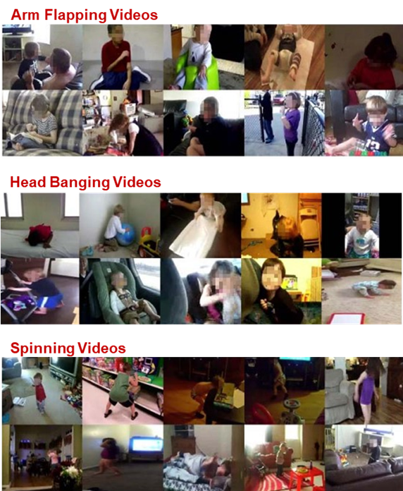
Figure 1.1 Examples of Stereotypical Behaviors from SSBD and ESBD Datasets.
1.2. Preprocessing
These two datasets are noisy and contain a large portion of the background or other subjects. To enhance recognition accuracy, we first preprocess the videos to obtain cleaner data that include target children performing ASD behaviors only. To this end, we leverage one of the most popular object detection models Detectron2. After that we apply a pose estimation model leveraging MediaPipe framework.
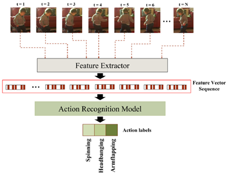
Figure 1.2. Preprocessing pipeline for stereotypical behaviour recognition using Detectron2 and MediaPipe pose estimation.
1.2.1. Child Detection
To detect and crop the target child from each video frame, we utilized Detectron2 which leverages a two-stage architecture:
The Region Proposal Network (RPN) operates as the first stage, scanning the entire image to generate bounding boxes around regions likely to contain objects (proposals). It uses convolutional layers to predict objectness scores and bounding box coordinates.
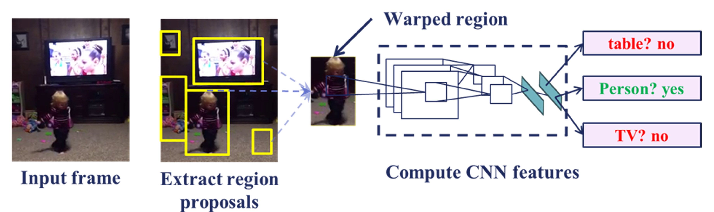
Figure 1.3. Region Proposal Network (RPN) Architecture for Object Detection.
The second stage involves Mask R-CNN, which refines these proposals by classifying the objects and generating pixel-wise masks. This allows precise localization of the child in each frame. Mask R-CNN adds a segmentation branch to the Faster R-CNN framework, enabling the network to produce a high-resolution binary mask for each region of interest (RoI).
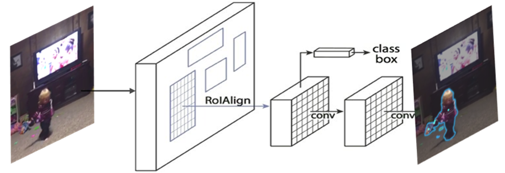
Figure 1.4. Mask R-CNN Architecture for Instance Segmentation.
We used pre-trained weights from the COCO dataset for efficient transfer learning. Once the target child was detected, we cropped the region inside the bounding box, resizing all frames to a fixed resolution, and discarded non-relevant background content to improve behavior-focused feature learning.
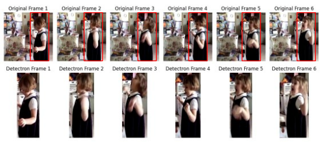
Figure 1.5. Example of child detection using Detectron2.
1.2.2. Pose Estimation
To further enhance the understanding of body dynamics, we applied MediaPipe’s holistic pose estimation, extracting 3D landmarks (joints and connections) from each frame. The extracted skeletons were saved as JSON files to preserve temporal consistency and inter-joint relationships across frames.
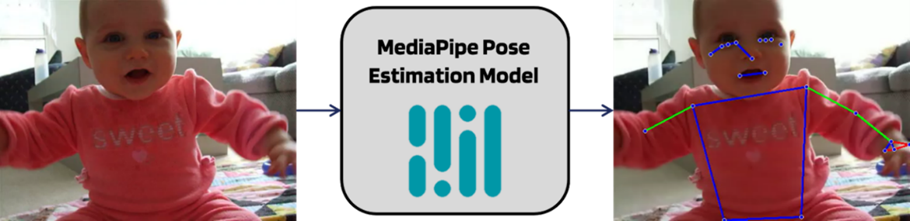
Figure 1.6. MediaPipe Pose Estimation Framework for Skeletal Keypoint Detection.
1.3. Action Recognition
For the core task of action recognition, we employed MViT-v2, which demonstrated superior spatiotemporal learning capabilities compared to CNNs or other transformer architectures. After benchmarking multiple models, MViT-v2 was chosen for its hierarchical attention mechanisms and robust performance on complex video tasks.
MViT architecture learns visual representations by progressively increasing the channel resolution while reducing the spatiotemporal resolution across stages. Early layers process high-resolution, low-channel features for simple visual patterns, while deeper layers operate on coarser, high-channel representations to capture semantic information. This design is especially effective for dense, space-time video signals where subtle temporal cues, such as brief stimming behaviors, must be detected.
A significant advantage of MViT lies in its temporal sensitivity. Unlike Video-SWIN or ViViT models, which rely heavily on static appearance and maintain performance even on shuffled frames, MViT-v2 demonstrates a significant performance drop when frame order is disrupted. This confirms its strong utilization of temporal information, crucial for ASD behavior recognition.
1.4. Experimental Results
This study is the first to explore the use of the MViT-v2 for recognizing STB associated with ASD. On the ESBD and SSBD test splits, our approach achieved an accuracy of 96.55% and an F1-score of 96.52%, significantly surpassing prior benchmarks. These results affirm the viability of using multiscale spatiotemporal transformers and robust preprocessing techniques for ASD-related behavioral recognition.
Method
Acc (%)
Params (M)
3DCNN
42.00
~33
Conv‑LSTM
74.00
~38
VideoMAE (ViT‑B/16)
87.40
303.9
Video‑SWIN + Lnguage
90.04
~92
VST+L(d)(pretrained)
94.43
~94
MViT + Data Augmentation
91.72
~27
MViT + Pose Estimation
93.59
~39
MViT + Detectron2
96.55
~37
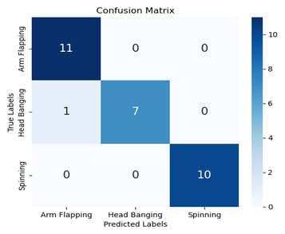
Figure 1.8. Confusion Matrix for STB Recognition on ESBD and SSBD Test Splits.
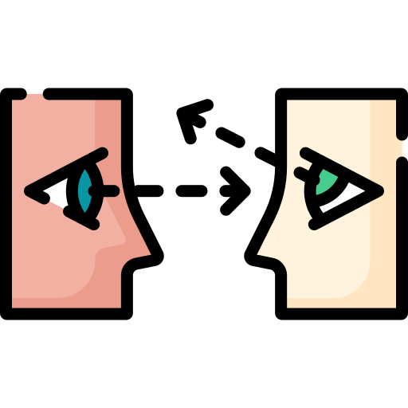
Gaze Estimation and Eye Contact Detection
Contribution: 100%
Gaze behaviour analysis provides a non‑invasive approach to assess a child’s attention and social engagement. Our model targets critical visual attention markers such as mutual gaze and joint attention by combining face detection, tracking and gaze estimation without specialised eye‑tracking hardware.
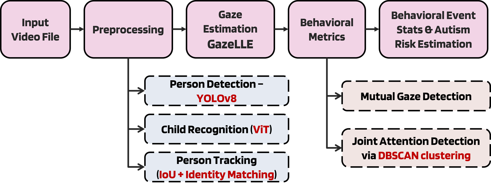
Figure 2.1. Automated Gaze-Based Autism Screening Model Pipeline.
2.1. Preprocessing
2.1.1. Person Detection and Recognition
To ensure accurate behavioral analysis and isolate relevant individuals in diverse video scenes, our system integrates YOLOv8, a state-of-the-art real-time object detection model to detect all persons in each video frame. Detected individuals are then processed through a dedicated Child Recognition module powered by a ViT, enabling the system to identify and focus exclusively on the child subject for subsequent analysis.
2.1.2. Person Tracking
To ensure accurate behavioral analysis and isolate relevant individuals in diverse video scenes, our system integrates YOLOv8, a state-of-the-art real-time object detection model to detect all persons in each video frame. Detected individuals are then processed through a dedicated Child Recognition module powered by a ViT, enabling the system to identify and focus exclusively on the child subject for subsequent analysis.
2.1.2.1. Intersection over Union (IoU)
At the core of our tracking mechanism is Intersection over Union (IoU), a geometric metric used to associate object detections across consecutive frames. IoU calculates the overlap between bounding boxes from the current and previous frames, helping determine if they represent the same individual.
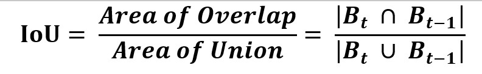
Figure 2.2. Intersection over Union (IoU) Calculation between Two Bounding Boxes.
If the IoU score exceeds a defined threshold, the system considers the detection a continuation of the previous track. This approach is computationally efficient and well-suited for real-time applications. However, it may face limitations under fast motion or occlusion, where appearance-based cues become essential.
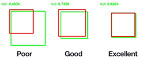
Figure 2.3. Computing Intersection over Unions for various bounding boxes.
2.1.2.2. Identity Matching
To enhance robustness in challenging scenarios, the system integrates identity matching techniques in addition to IoU. This involves extracting visual embeddings such as color histograms or deep appearance features from each bounding box and comparing them to those of previously tracked individuals. A similarity score is computed to assess whether the current detection belongs to an existing identity or a new one.
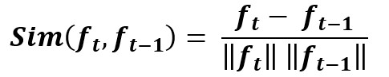
Figure 2.4. Identity Matching Equation.
Combining spatial (IoU-based) and appearance-based matching increases tracking accuracy, reduces identity switches, and ensures reliable association of behavioral data to the correct child throughout the video sequence.
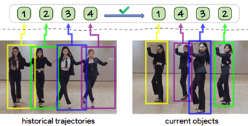
Figure 2.5. Identity Matching Person Tracking Diagram of the in-context ID prediction process.
2.2. Gaze Estimation (Gaze-LLE)
Gaze-LLE is a transformer-based gaze estimation framework designed for minimal computational overhead and maximum flexibility. Its architecture consists of two primary components:
2.2.1. Frozen Scene Encoder
The backbone of Gaze-LLE is DINOv2, a self-supervised ViT model that produces high-quality, dense scene representations. DINOv2 is trained on large-scale, unlabeled data via contrastive learning (Distillation with No Labels), and excels in both image- and pixel-level vision tasks. In our implementation, the DINOv2 encoder is frozen, meaning its weights are not updated during training. This design choice is motivated by:
Reducing training complexity and memory requirements
Prevents overfitting on small datasets by leveraging robust, pre-learned representations.
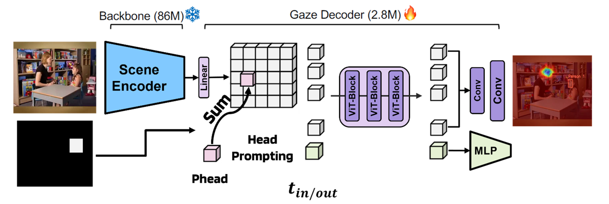
Figure 2.6. Gaze-LLE Framework Architecture - Frozen DINOv2 Backbone with Head Prompting and Transformer-Based Gaze Decoder for Heatmap Generation.
2.2.2. Gaze Decoder Module with Head Prompting
The output of the scene encoder is passed to a transformer-based gaze decoder. This module incorporates head position embeddings (the bounding box of the child’s face) post-encoding, which is an innovation over the traditional approach of integrating them pre-encoding. This architecture enables Gaze-LLE to operate efficiently with only 2.8 million learnable parameters, making it highly suitable for real-time deployment.
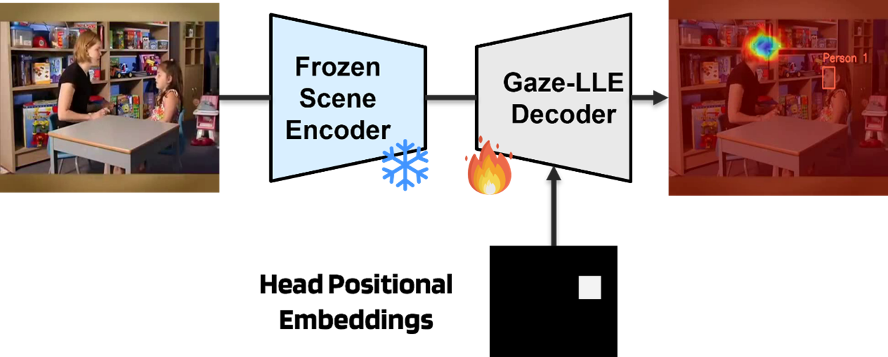
Figure 2.7. Gaze Decoder Module with Head Prompting for Enhanced Gaze Estimation.
2.3. Social Gaze Metrics
The output of Gaze-LLE is not limited to raw gaze heatmaps. We extract several quantitative behavioral metrics from its predictions.
2.3.1. Mutual Gaze
Defined as the proportion of frames in which the child's gaze overlaps with the region of the observer’s (e.g., parent's or doctor's) face. Mutual gaze is a well-established early indicator of social-communicative development and is often diminished in children with ASD.
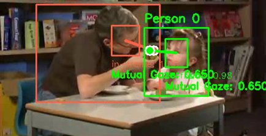
Figure 2.8. Mutual Gaze Analysis with Positional Prompting.
2.3.2. Joint Attention
Assessed using DBSCAN (Density-Based Spatial Clustering of Applications with Noise), a clustering algorithm that groups gaze targets across frames. Consistent gaze clusters over time are interpreted as signs of shared focus such as looking at the same toy or character on the screen.
Joint attention is crucial in early language and social development and is frequently impaired in ASD.
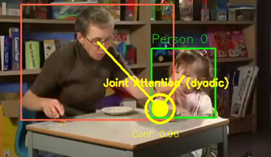
Figure 2.9. Joint Attention Detection Using Gaze Clustering.
Sensorimotor and Socioemotional Markers Analysis
Contribution: 100%
This model is designed to capture real-time behavioral, physiological, and emotional cues essential for assessing ASD in toddlers. It offers a scalable, accessible solution that uses webcam to analyze a child’s behavior during interactions with visual content on a screen.
3.1. Visual Content Selection
To facilitate the engagement of autistic children with meaningful and socially relevant visual content, we integrated selected episodes from the “Pablo” series into our platform. Pablo features a five-year-old autistic boy who navigates real-life situations with the help of imaginary animal friends. The series is specifically designed for autistic children, addressing social anxiety, emotional understanding, and communication through relatable storytelling and positive behavioral modeling.
We selected this series because it represents real-life social challenges and coping mechanisms in a way that is emotionally resonant and therapeutically appropriate. By embedding this content in our system's web interface and activating the camera in the background, children interact with the content naturally, which enables the collection of spontaneous valid behavioral responses.
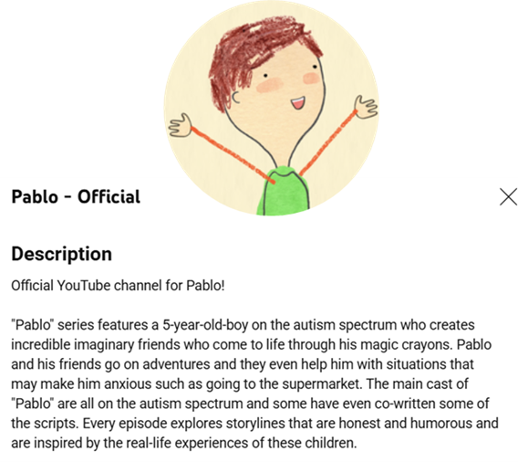
Figure 4.1. Description of the Pablo channel used to present visual stimuli during Sensorimotor and Socioemotional Analysis.
3.2. Facial Landmarks Detection
Once the webcam is activated, frames are continuously captured and processed in real-time. MediaPipe Face Mesh framework is applied to detect and extract 468, 3D facial landmarks from each detected face. These facial regions are then classified using a ViT model, which determines whether each detected face belongs to a child or an adult. Only child faces are retained for downstream analysis, ensuring that all subsequent markers relate specifically to the target subject.
Facial landmarks provide the spatial foundation for several core features. In particular, the centers of the left and right irises are computed by averaging the coordinates of four dedicated landmarks each. The left iris center is derived from landmarks 474-477, while the right iris center is calculated using landmarks 469-472.
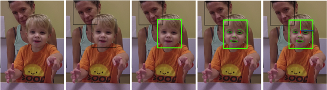
Figure 4.2. Preprocessing steps prior to eye contact detection. Left to right: 1) Input image; 2) All faces are detected; 3) Child’s face is selected; 4) Facial landmarks are localized; and 5) Head pose is estimated.
3.3. Head Pose Estimation
Head orientation is estimated using reference points derived from the detected 3D facial landmarks, particularly the nose tip, chin, and eye corners. Then we compute the Euler angles (Pitch, Yaw, and Roll). These angles represent the spatial orientation of the head and are tracked over the entire video session.
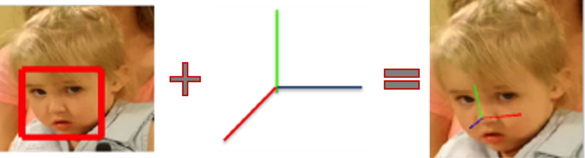
Figure 4.3. Demonstrates the real-time estimation of head orientation to assess visual attention and engagement.
Head pose variability is an important biomarker in ASD, as abnormal head motion patterns may indicate issues with attention regulation or sensory processing. This variability is captured by measuring changes in the Euler angles across time, thereby producing a quantitative marker of head movement stability.
3.4. Eye Blinking Detection
Blinking analysis is performed through the Eye Aspect Ratio (EAR), which quantifies changes in eyelid separation relative to eye width. Three distances are extracted from the eye contour landmarks: inner vertical distance, outer vertical distance, and horizontal eye width.
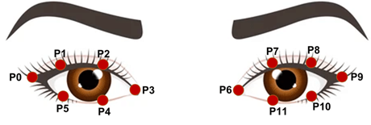
Figure 4.4. Eye Aspect Ratio (EAR) Calculation Using Eye Contour Landmarks.
The EAR is computed as the average of the two vertical distances divided by the horizontal distance. A lower EAR indicates eye closure, while a higher EAR corresponds to open eyes. By tracking EAR over time, we can identify blink events and calculate blink rate and duration, which are relevant markers of sensory processing in ASD.
The EAR is calculated using the following formula:
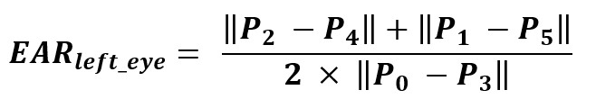
3.5. Emotion Recognition
To analyze emotional responses, each detected child’s face is passed to the DeepFace model. It performs face detection, alignment, and embedding extraction using a deep CNN. The extracted features are compared to pre-trained templates to classify emotions into standard categories.
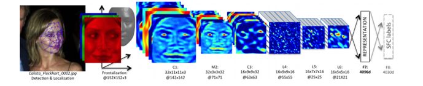
Figure 4.5. Visual representation of the DeepFace CNN pipeline used to extract emotional features from facial images.
This analysis tracks changes in the child's emotional expression while watching the visual content and provides insight into their affective engagement. The emotion pattern over time is especially useful in evaluating the child’s reaction to specific scenes and identifying moments of empathy, anxiety, or enjoyment.
3.6. Open Mouth Abnormality Detection
Open mouth posturing is another potential marker for ASD and is assessed using the Mouth Aspect Ratio (MAR). MAR is computed from lip landmarks extracted using the Dlib facial landmark detector. The ratio compares the vertical mouth opening to the horizontal lip distance. Consistently high MAR values are interpreted as abnormal open-mouth appearances, which may suggest neuromotor control issues.
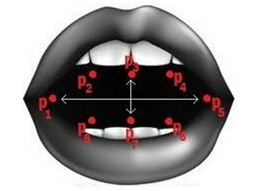
Figure 4.6. Mouth Aspect Ratio (MAR) Calculation Using Lip Landmarks.
The MAR is calculated using the following formula:
3.7. Output Metrics and System Integration
All extracted features are processed and saved in real-time, producing a comprehensive set of behavioral markers for each child session. These include blinking rate, head pose variability, gaze stability, eye contact duration, emotion fluctuation patterns, open mouth appearances, and an overall social engagement score.
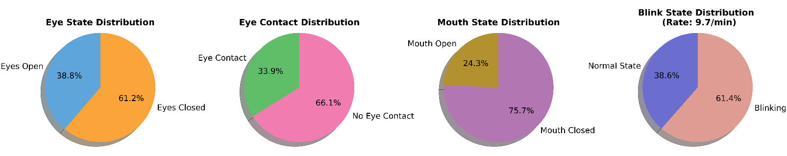
Figure 4.7. Eye State, Eye Contact, Mouth State, and Blink State Distributions for a given session.
The model is deployed within a web-based platform where the child is presented with educational video stimuli chosen by the parent. The webcam runs unobtrusively in the background, allowing for a naturalistic interaction setting. In addition to providing immediate insights, this system doubles as a data collection tool for future studies, contributing to a scalable, multimodal framework for early ASD detection and assessment.
Audio‑Visual Behavior Analysis via VLMs
Contribution: literature, model selection, and preprocessing
4.1. Dataset Description
The dataset used in this model is the Audio-Visual Autism Spectrum Dataset (AV-ASD), which was created to support research on autism-related behaviors. It includes 928 video clips collected from 569 publicly available YouTube and Facebook videos, showing various behaviors in different settings.
AV-ASD has several advantages over previous autism-related datasets. It contains more clips, more behavior categories, and is the first dataset to include social behaviors. It also supports multi-label annotations, which is important because multiple autism-related behaviors can happen at the same time.
The annotation process was done in two steps. First, six student annotators labeled the behavior in each video. Then, a Speech-Language Pathologist (SLP) with 15 years of experience checked each clip again and labeled all behaviors present using a multi-label format, without marking time intervals.
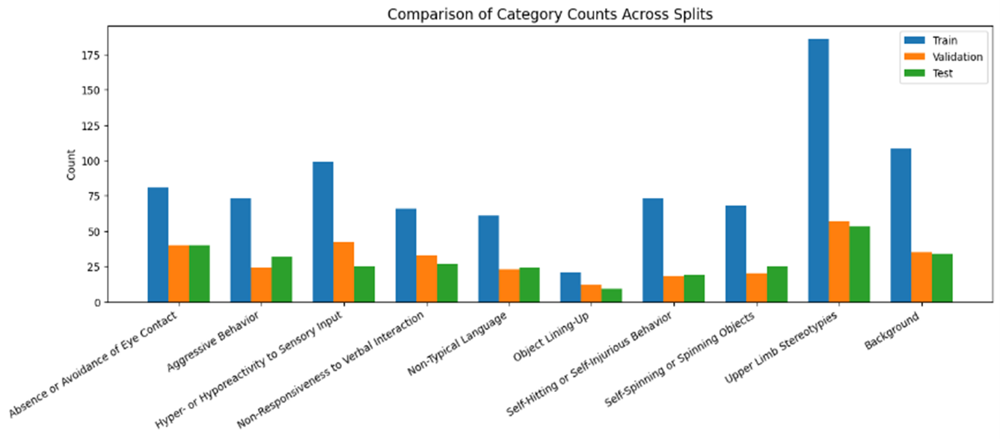
Figure 5. Audio-Visual Autism Spectrum Dataset (AV-ASD) Overview: Distribution of Clips per Behavior Category.
4.2. Preprocessing
To prepare the data for the MLLM, three types of preprocessing steps are performed: one for image representation and two for audio representation.
4.2.1. Image Representation
The visual representation is obtained by uniformly sampling 9 frames from each video. These frames are then arranged in a 3×3 grid to form a single image representing the video clip.
4.2.2. Audio Representation
The first step in audio preprocessing involves generating an audio caption that describes the semantic content of the audio signal. This is achieved using CoNeTTE, an audio captioning model that follows an encoder–decoder architecture. The encoder is a modified ConvNeXt (CNext) model adapted from the vision domain to process audio signals, while the decoder is a Transformer network that generates the caption text by predicting the next word based on previous tokens and the audio representation.
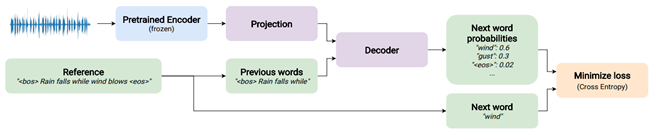
Figure 4.1. CoNeTTE Audio Captioning Model Architecture: Modified ConvNeXt Encoder and Transformer Decoder.
4.2.3. Audio Transcription
The speech transcription stage transforms spoken language from video clips into structured text. This is accomplished using Whisper, a large-scale speech recognition model developed by OpenAI. In this work, the Whisper encoder processes each audio segment and extracts a fixed-length speech representation. To obtain the final speech feature vector, average pooling is applied across the encoder’s time dimension, producing a robust embedding that captures the semantic and acoustic content of the spoken utterances. These transcriptions serve as a textual input for downstream models, enabling the system to recognize and reason about autism-related behaviors involving non-typical language and other speech-linked social indicators.
To improve autism behavior recognition, we propose instruction tuning of PaliGemma-2, a powerful VLM that combines visual and textual understanding. The model input includes a 3×3 grid of uniformly sampled video frames, along with a textual prompt enhanced by audio captions and speech transcriptions.
For training, we construct a paired instruction dataset Inst,y, where Inst denotes the multimodal input (image grid + enriched prompt), and y represents the multi-label behavioral annotation corresponding to autism-related categories. The prompt is designed to guide PaliGemma toward recognizing nuanced behaviors such as non-typical language, non-responsiveness, and repetitive motor actions.
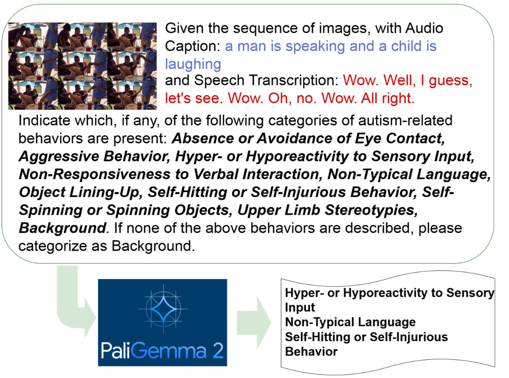
Figure 4.3. PaliGemma Instruction Tuning for Multimodal Autism Behavior Recognition from Audio-Visual Inputs.
To enable efficient fine-tuning, we leverage LoRA (Low-Rank Adaptation) or parameter-efficient tuning methods. The training process employs Cross-Entropy Loss with class weighting to address label imbalance, and model performance is monitored using macro-averaged F1 scores. By integrating temporal, linguistic, and semantic cues, this tuning process empowers PaliGemma to capture the complex interplay between speech and behavior, leading to more accurate and explainable predictions for autism screening.
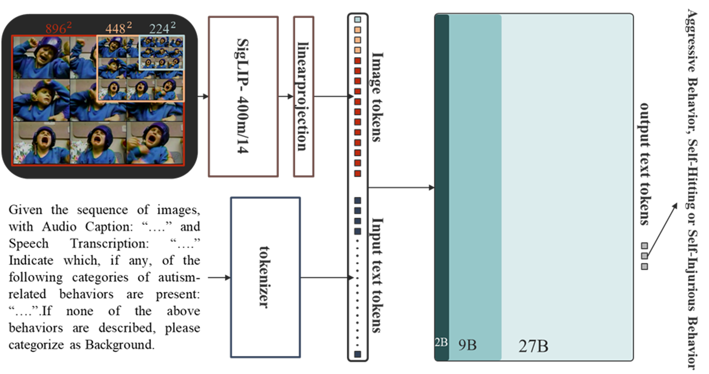
Figure 4.4. PaliGemma-2 Architecture for ASD Behavior Analysis: Multimodal Fusion of Image and Text Tokens with SigLIP Projection.
4.4. Results
The proposed pipeline leverages PaliGemma-v2, achieving higher F1-scores in several behavior categories compared to LLaVA-ASD, despite utilizing 10 billion fewer parameters. However, due to the complexity of the dataset and the inherent challenges of multi-label classification in large-scale multimodal models, the overall performance still requires substantial improvement.
Table 4.1. F1-score comparison between the proposed PaliGemma-2 and LLaVA-ASD across AV-ASD dataset.
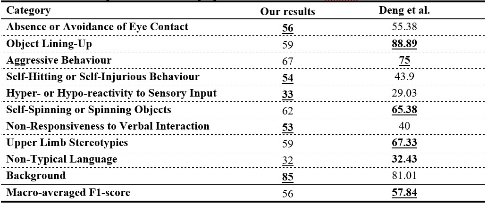
Table 4.2. Classification Performance on the Test Dataset (182 Videos Total).
Graphomotor tasks not only reflect motor development but also reveal patterns of cognitive and expressive functioning. A growing body of research indicates that children with ASD often experience challenges in performing handwriting tasks, which can be detected and quantified using computational models.
This model was developed as part of a broader initiative to explore new diagnostic pathways in ASD assessment. Specifically, it investigates the cognitive distinctions embedded in children’s creative outputs, offering a promising avenue for non-invasive behavioral screening.
5.1. Dataset
The dataset used for this study was sourced from Kaggle, released in 2024, and includes a total of 1,115 labeled images. The images are divided across three types of graphomotor tasks: Drawings, Coloring, and Writing. Each sample is annotated as either ASD or non-ASD. For ASD-labeled data, an additional classification is provided to indicate severity levels: mild, moderate, or severe.
The dataset reflects a variety of expressive patterns and maturity levels that help characterize the motor and cognitive profiles of children. The insights derived from this work extend beyond detection, contributing to the understanding of the relationship between artistic expression and neurodevelopmental conditions.
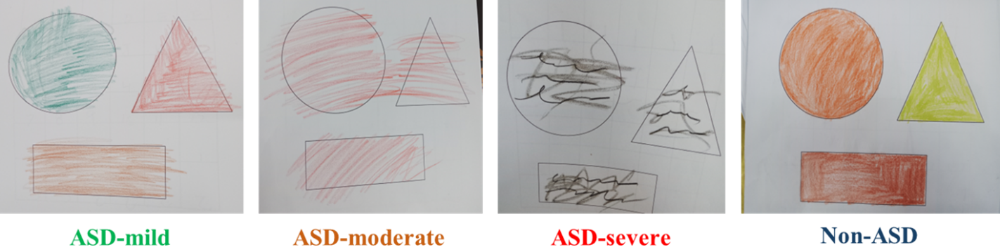
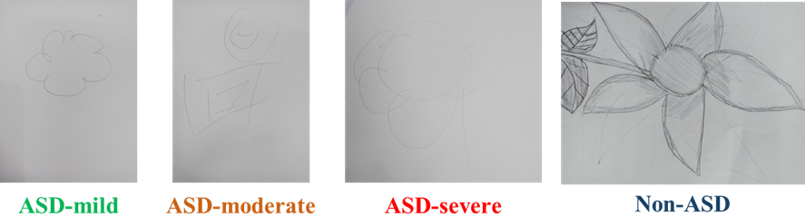
Figure 5.1. Sample Coloring and Drawing Data from Children with ASD and Typically Developing (TD) Peers.
5.2. Preprocessing
To ensure optimal performance of the classification models, a standard preprocessing pipeline was implemented. Images were resized to a consistent resolution and normalized to match the input requirements of the different neural network architectures. Noise removal techniques and augmentation methods (rotation, flipping, and contrast adjustments) were selectively applied to enhance generalization and robustness.
5.3. Classification Model
We implemented a two-stage classification framework: the first stage determines whether a child is classified as ASD, and if so, the second stage assesses severity by evaluating performance difficulty or atypicality. This approach achieves high accuracy and demonstrates strong diagnostic reliability.
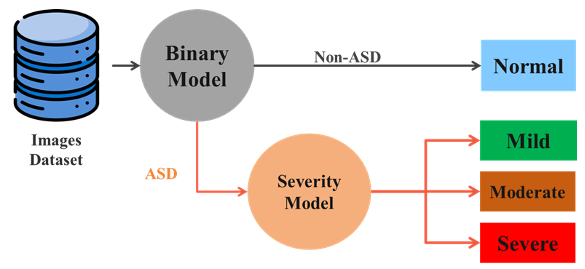
Figure 5.2. Two-Stage Classification Framework for ASD Detection and Severity Assessment.
To implement this pipeline, we evaluated a diverse set of models. These models were trained and validated on the preprocessed dataset, with each model evaluated on both tasks (ASD detection and severity assessment). The multi-level inference process introduced a novel granularity in ASD assessment, allowing not only detection but also personalized characterization of motor-related impairments, which is currently underrepresented in existing diagnostic approaches.
5.4. Results
Model training was conducted using the standard supervised learning paradigm. For MobileNet model, we used a Cross-Entropy loss function and Adam optimizer with learning rate tuning based on validation performance. For SVM and RF classifiers, Grid Search was applied to determine optimal hyperparameters.
Data were split into 80% training and 20% testing partitions. Each model underwent multiple iterations with 5-fold cross-validation to ensure statistical validity and reduce overfitting.
Across both stages of classification, our models demonstrated strong performance:
ASD Detection: Multiple models achieved over 95% accuracy, confirming the predictive value of visual and spatial features extracted from drawings, coloring, and handwriting.
Severity Classification: Similarly, classifiers achieved high accuracy in distinguishing between mild, moderate, and severe ASD cases, with the top-performing model maintaining over 95% accuracy.
Table 5.1. Performance of ASD Detection and Severity Estimation Models Using Graphomotor Tasks.
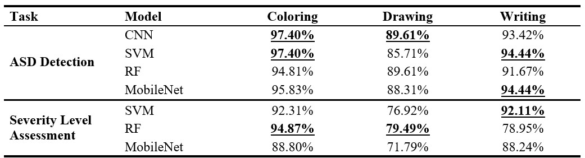
These results highlight the diagnostic potential of graphomotor analysis for early ASD detection. Unlike prior studies that focused only on handwriting, our framework offers enhanced detail and broader applicability in both research and clinical contexts. Additionally, expert reviews by child psychologists confirmed that variations in stroke consistency, pressure patterns, symmetry, and detail correlated with established ASD behavioral markers, reinforcing the validity of our computational approach.
Early Risk Screening via Quantitative Checklist for Autism in Toddlers
Contribution: 100%
In our system, we integrate Q-CHAT-10 analysis through a robust ensemble learning model capable of not only binary classification (ASD or non-ASD) but also estimating severity levels (mild, moderate, or severe). This enhances its applicability as a clinical decision support tool.
6.1. Dataset Description
We use a publicly available dataset which includes Q-CHAT-10 responses collected via online questionnaires.
Age Range: Toddlers aged 12–36 months.
Metadata: Includes age, gender, region, familial ASD history, and identity of the test respondent.
Labels: Each entry is annotated as ASD or non-ASD and includes an assigned severity level.
This dataset serves as a valuable resource for validating our AI-powered pipeline in culturally specific contexts.
6.2. Model Architecture
To ensure accuracy and generalizability, we adopted an ensemble machine learning approach. The ensemble output is determined through soft voting, aggregating probabilities from each model to improve robustness against noise and class imbalance. This architecture enables the system to:
Predict the likelihood of ASD based on Q-CHAT-10 responses.
Assign severity levels for ASD-positive cases using a separate calibrated classifier.
The model is trained using stratified k-fold cross-validation (k=5) to ensure reliable performance across different age groups and demographics.
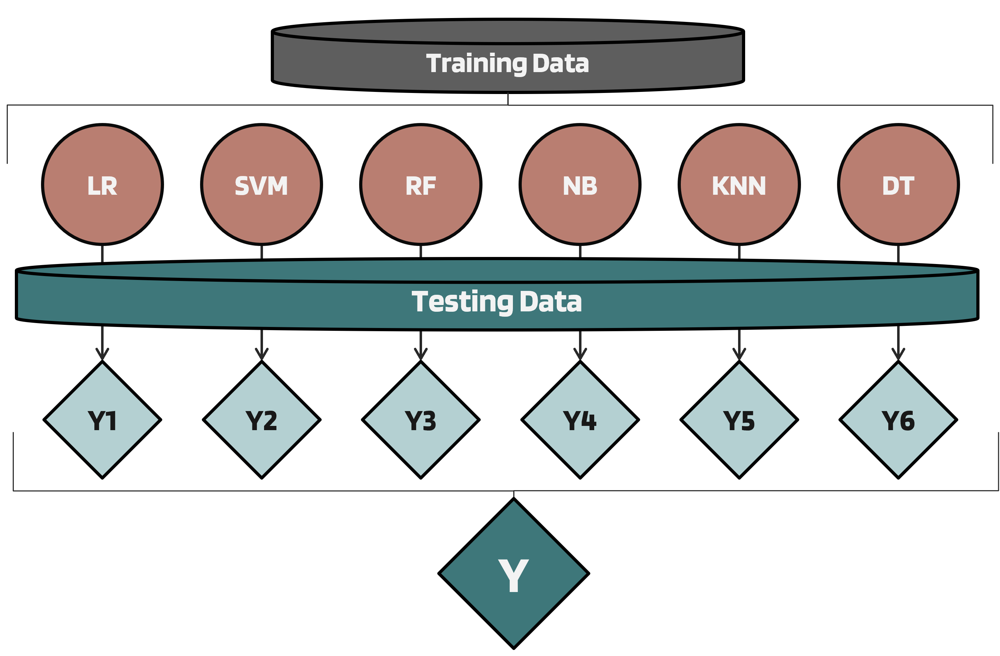
Figure 6.1. Ensemble learning architecture for analysing Q‑CHAT‑10 responses and estimating ASD risk and severity.
6.3. Model Interpretation
We also applied SHAP (SHapley Additive exPlanations) to interpret the model’s predictions and uncover key behavioral indicators most associated with ASD. The most impactful questions include:
A6 (Following gaze), A7 (Empathy and comfort-seeking), A9 (Gestures like waving), A1 (Response to name), A5 (Pretend play): High feature values (in red) push the prediction strongly toward ASD.
A2 (Eye contact), A3 (Pointing to request), A4 (Pointing to share interest), A8 (First words), A10 (Unusual staring): Still contribute, but less impact compared to the top ones.
This project presents Nabta, a unified, multi-symptom AI-powered web-based platform designed for early screening, monitoring, and assessment of ASD symptoms in toddlers. The platform integrates a series of specialized deep learning models and multimodal assessment tools that collectively address behavioral, social, emotional, and developmental aspects of ASD. Each module is carefully developed based on domain-specific research and validated datasets, achieving state-of-the-art performance in key diagnostic indicators.
The system encompasses six core AI models: (1) a stereotypical behavior recognition model; (2) a gaze estimation model based on GazeLLE for gaze tracking and social interaction analysis; (3) a real-time sensorimotor and socioemotional markers analyzer for detecting gaze direction, head movements, emotions, mouth postures, and blinking patterns; (4) a social behavior analysis model leveraging VLMs to understand the child's verbal responses and engagement in structured video conversations; (5) a graphomotor pattern analysis model; and (6) a Q-CHAT model for questionnaire-based ASD screening. All these models are integrated into a culturally adaptive, user-friendly bilingual web interface that enables accessible interaction.
Through rigorous experimentation, the system has demonstrated high performance across all tasks, surpassing existing tools in the analysis of stereotypical behaviors and fine-motor tasks, while delivering robust gaze estimation. Designed to be fully contactless and non-invasive, the application performs reliably in real-world settings, equipping clinicians and parents with early, data-driven insights. Ultimately, Nabta offers a scalable, accessible, and impactful ASD screening solution, grounded in state-of-the-art AI innovation.
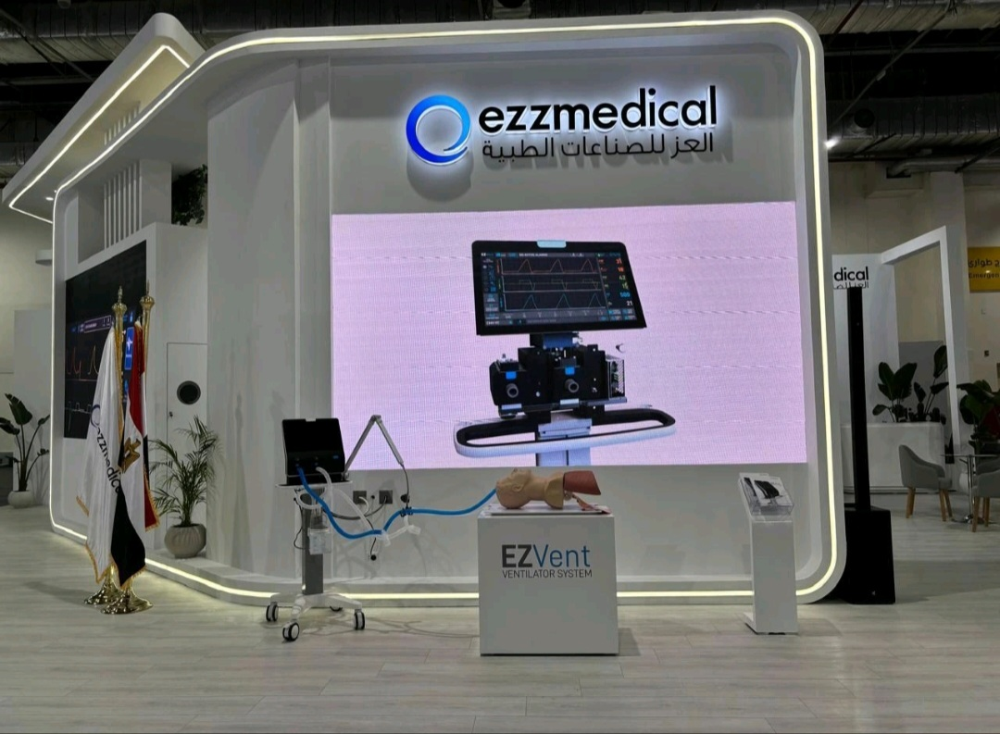
AI Engineer
Ezz Medical Industries
Dec 2024 - Sep 2025
Enhanced SRS automation using a RAG pipeline to reduce manual review time and improve requirement consistency.
Developed a fully functional Risk Management System powered by advanced AI techniques to ensure compliance and efficiency.
Designed a BOM tree system to streamline ventilator manufacturing workflows and improve FDA traceability compliance.
Automated inventory database structuring through an Agentic AI system, improving data accuracy and operational efficiency.
Developed a customized LLM solution based on the Qwen-3 model to accelerate standard-clause matching and improve ISO coverage optimization.
Gained hands-on experience in the IoT value chain, including device layers, connectivity protocols, data acquisition workflows, and cloud integration fundamentals.
Developed IoT applications using the MasterOfThings IoT AEP Platform, including designing dashboards, building automation rules, and deploying real-time monitoring pipelines.
Performed practical IoT laboratory work, including configuring sensors and microcontrollers, connecting devices to IoT platforms, and validating data transmission and device interoperability.
Built and tested end-to-end IoT scenarios combining hardware, networking, and cloud-based analytics for real-world use cases.
Internet of Things (IoT)IoT Value ChainWireless CommunicationMQTTCloud IntegrationMasterOfThings IoT AEPReal-Time MonitoringIoT AutomationConnectivity ProtocolsSmart Systems
PyQtQtFlaskDjangoFastAPITailwind CSSFlutterAndroid Studio
Development Tools
JupyterGitGitHubVS CodeDockerJetBrainsAnaconda
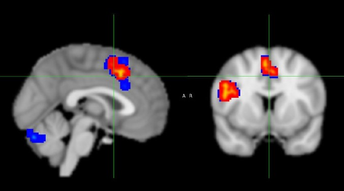
Exploring-Cognitive-Control-through-fMRI-Analysis: A Comprehensive Data Analysis Project
This project presents a comprehensive analysis of the Flanker Dataset using functional magnetic resonance imaging (fMRI) to investigate the neural basis of cognitive control. The study examines differences in BOLD responses between Congruent and Incongruent Flanker trials. A full analysis pipeline—including quality control, preprocessing, statistical modeling, and post-hoc evaluation—was conducted using the FSL software suite. The findings provide meaningful insights into the neural mechanisms underlying cognitive control and response inhibition.
Comprehensive Analysis of Gene Expression and Pathway Enrichment in Lung Squamous Cell Carcinoma (LUSC)
This project focuses on analyzing gene expression data to identify differentially expressed genes (DEGs) in Lung Squamous Cell Carcinoma (LUSC) and exploring their biological significance using Gene Set Enrichment Analysis (GSEA). The findings contribute to understanding LUSC mechanisms and identifying potential biomarkers and therapeutic targets.
This project presents a comprehensive analysis of climate change models using partial differential equations (PDEs). The study focuses on developing and solving mathematical models to simulate climate dynamics and predict future climate scenarios. Advanced numerical methods and computational techniques are employed to analyze the impact of various factors on climate change.
Hermes AI-Powered Mobile App for Automated Gait Pose Estimation and Analysis Using LLMs
Developed a mobile gait analysis app using MediaPipe Pose for 3D landmark detection and extracted temporal gait parameters from video input.
Integrated patient-specific data and utilized Gemini 2.0 Flash LLM to generate clinical recommendations, risk assessments, and personalized rehabilitation insights.
VisualMinds is a comprehensive repository showcasing advanced computer vision applications, all developed from scratch using C++ and the Qt framework. Each application focuses on various aspects of image processing, segmentation, and analysis, delivering robust desktop solutions.
Pandora BCI is a project built around EEG data, we built a deep learning model to predict patietns' movements based on their EEG signals. Our dataset is WAY-EEG-GAL, the model is then deployed to a Flask web server. A desktop application was built to visualize the EEG signals of patients (Specific channels), and a mobile application was built to visualize the model itself and use it to predict a series of movements based on the input EEG signals file. We have built an artificial arm with ESP8266 to be controlled by the predictions of the patients, and it can also be controlled by the mobile application.
EEG-BCIDeep LearningNeural NetworksPyTorchEEG Signal ProcessingWAY-EEG-GAL DatasetMobile ApplicationDesktop ApplicationFlaskElectron.jsReact NativeESP8266Servo MotorsInternet of Things (IoT)
cv_do_you_know_me is a robust computer vision project that integrates multiple advanced features for facial and body part detection, real-time video processing, and facial recognition. This project is designed to explore the capabilities of various computer vision libraries and models, making it a comprehensive tool for developers and researchers interested in face detection, landmark tracking, and more.
Developed an autonomous drone system using an ESP32 microcontroller for real-time flight control and communication. Implemented the A* pathfinding algorithm to enable dynamic route planning and efficient obstacle avoidance in constrained environments. Designed and executed end-to-end mission simulations in Unity, integrating physics-based models to evaluate navigation accuracy, environmental interaction, and system reliability prior to field deployment.
PythonUnityA* AlgorithmESP32MPUsPID ControlAutonomous SystemsMission SimulationQGroundControlPX4 AutopilotUAV ControlObstacle AvoidancePathfindingDrone NavigationSensor FusionOver-the-Air (OTA) ProgrammingInternet of Things (IoT)Real-Time Systems
DICOM Visualizer is a Python desktop application built with PyQt6 and VTK that facilitates the visualization of DICOM data in 3D. This tool empowers users to upload DICOM datasets and visualize them using two distinct rendering methods: Raycast Rendering and Surface Rendering. Additionally, users have the flexibility to fine-tune rendering parameters such as ambient, diffuse, specular, and specular power for Raycast Rendering, and ISO value for Surface Rendering. Furthermore, the application allows users to customize the color of the visualization.
Computer GraphicsDICOMPyQt6VTK3D VisualizationRaycast RenderingSurface RenderingMedical ImagingVolume RenderingRendering ParametersMedical Data Visualization
SonicCipher is an innovative project that leverages digital signal processing (DSP) and machine learning to create a unique and secure identification system. By combining voice fingerprinting and word fingerprinting, SonicCipher excels in speaker identification and word recognition.
Digital Signal ProcessingMachine LearningSpeaker IdentificationWord RecognitionAudio FingerprintingMFCCChroma FeaturesSpectral ContrastSupport Vector Classifier (SVC)
This project involved simulating ultrasound pressure fields generated by a phased-array transducer using the MATLAB UltraSound Toolbox (MUST). The task required modeling focused, diverging, and multi-focus acoustic fields by calculating precise transmit delays for each piezoelectric element based on beamforming and steering principles. Pressure fields were computed across a 2D polar grid and analyzed using RMS pressure intensity metrics to examine beam shape, focal quality, and energy distribution. Through this simulation workflow, the project explored how phased-array beamforming controls acoustic field geometry, resolution, and field-of-view—key components in diagnostic imaging and therapeutic ultrasound applications.
Fat/Water Separation Using Dixon Technique in Multi-Spin Echo MRI for Mid-Thigh Imaging
This project focuses on implementing the Dixon MRI technique to separate fat and water signals in mid-thigh imaging using multi–spin-echo acquisitions. The workflow involves generating in-phase and opposed-phase images, computing water-only and fat-only maps through mathematical decomposition, and analyzing the resulting tissue contrasts to evaluate muscle integrity and fat infiltration. Data from Siemens and Philips MRI scanners were processed using deep-learning–accelerated reconstruction and visualized through Python-based tools to assess beam characteristics, quantify signal separation, and examine image quality for musculoskeletal diagnostics. The method demonstrates robust fat suppression, reduced artifacts compared to traditional techniques, and provides clinically relevant insights into tissue composition and muscle-related abnormalities.
MRI scannersMESE SequencesMulti-spin-echo imagingDixon Fat-Water SeparationDual-echo signal decompositionWater–fat separation modelingEnhanced musculoskeletal contrastT2 MappingChemical Shift ImagingIn-phase and Opposed-phase ImagingStreamlit
Simulate metal implants in CT data, introduce corresponding artifacts, and implement a metal artifact correction technique
The project simulates metal artifacts in CT imaging and applies a sinogram inpainting method to reduce them. Synthetic metal objects were added to CT images, projected into sinogram space, and reconstructed to visualize artifact formation. The correction approach identified metal-corrupted sinogram regions and replaced them using interpolation, followed by post-processing to enhance edges and contrast. The results show noticeably improved image quality, demonstrating that projection-domain inpainting is an effective strategy for metal artifact reduction.
Enhanced Skin Cancer Classification using Pre-trained CNN Models and Transfer Learning
This project presents a clinical decision support system for automated skin cancer classification using transfer learning with pre-trained convolutional neural networks. Dermoscopic images from the HAM10000 dataset were preprocessed through resizing, augmentation, and class-imbalance correction before being trained on four deep learning architectures: VGG16, ResNet50, DenseNet201, and MobileNetV2. The system leverages ImageNet-based feature extraction and fine-tuning strategies to classify seven categories of skin lesions. Extensive experiments evaluated multiple training configurations, including weighted loss functions and augmented batches, with DenseNet201 achieving the highest performance, reaching over 94% testing accuracy. The results demonstrate that transfer learning provides a robust and efficient approach for addressing limited, imbalanced dermatological datasets, and highlight the potential of CNN-based systems to support dermatologists in early and accurate skin cancer diagnosis.
Skin Cancer ClassificationHAM10000 DatasetTransfer LearningConvolutional Neural NetworksVGG16ResNet50DenseNet201MobileNetV2Data AugmentationWeighted Loss FunctionDermoscopic Image AnalysisClinical Decision Support System (CDSS)
This project analyzes the EEG Alcohol dataset to investigate neural patterns associated with alcohol consumption using multichannel electrophysiological recordings. The dataset contains 1-second EEG segments collected from 64 scalp electrodes at 256 Hz for both alcoholic and control subjects under varying stimulus conditions. The analysis pipeline includes data cleaning, artifact handling, temporal–spatial feature extraction, and classification of alcohol consumption status using machine-learning models. Extracted features capture spectral power, statistical descriptors, and channel-specific activity patterns that differentiate alcoholic from non-alcoholic EEG profiles. Several classifiers were trained and evaluated, demonstrating that EEG-derived biomarkers can reliably distinguish between the two groups. The project highlights the potential of signal-processing and ML techniques in identifying neurophysiological signatures of alcohol use and supporting neuroscience-driven diagnostic insights.
This project implements a Verilog-based Round Robin Arbiter to manage fair and deterministic access to a shared hardware resource among multiple requesters. Using clocked sequential logic and a rotating priority scheme, the arbiter guarantees starvation-free scheduling and balanced resource distribution. Simulation results confirm predictable behavior under varying load conditions, demonstrating the effectiveness of Round Robin arbitration in concurrent digital systems.
Round Robin ArbitrationVerilog HDLBus Access SchedulingClocked Sequential LogicRotating Priority SchemeStarvation-Free SchedulingDigital Circuits DesignHardware Resource ManagementHardware Control Logic
This project implements a watchdog-supervised LED blinking system designed to ensure precise timing and robust fault recovery in embedded applications. The LED toggles with a fixed 500 ms period, driven by periodic calls to the LED management component, while a watchdog timer with a 50 ms timeout supervises system activity. Watchdog management monitors the execution frequency of the LED manager and refreshes the watchdog only when timing and aliveness conditions are satisfied. Multiple scenarios—including normal operation and three controlled fault cases—were simulated to verify system behavior, demonstrating correct detection of missed executions, timing deviations, and component failures. The project validates an integrated supervision architecture combining GPIO control, periodic timers, watchdog drivers, and aliveness monitoring to maintain system stability and ensure reliable LED operation.
This project involves the development of a prototype for the ADVIA 1800, a crucial piece of medical equipment used for high-throughput clinical chemistry analysis. The prototype is designed and built as part of the Medical Equipment 2 course, under the supervision of Dr. Eman Ayman, in collaboration with Siemens Healthineers.
ArduinoESP8266Chemical AnalyzerSiemens HealthineersMedical EquipmentEmbedded Systems
TheraPlan: Integrated Radiotherapy Department Design and Planning System
This project presents a comprehensive, standards-compliant architectural and technical design for a modern radiotherapy department. It encompasses spatial layout, room-specific standards, medical equipment integration, safety infrastructure, IT systems, and cost planning, aligned with IAEA, NCRP, and IEC regulations.
Awarded a Certificate of Recognition for participation in the AI Empower Egypt “Hack for Impact” program, focusing on practical AI applications and impact-driven solutions. :contentReference[oaicite:0]{index=0}
Click the arrow inside each research box to access a drive folder containing the most influential and inspiring papers in that topic for me.
Special thanks to all authors whose exceptional research made this knowledge possible.
Neurodevelopmental Disorders
I explore AI-driven markers that help characterize behavioral, cognitive, and developmental patterns in conditions such as Autism Spectrum Disorder.
Vision-Language Models (VLMs)
I work with multimodal architectures that jointly understand images and text, enabling scene reasoning, description, and behavioral interpretation.
Biological Intelligence
I am interested in computational models inspired by neural, cognitive, and behavioral processes observed in biological organisms.
Generative Models
I use diffusion models, VAEs, and GANs to synthesize images, enhance datasets, and uncover latent representations in behavioral and medical data.
Ego-centric Vision
I analyze first-person video to study actions, attention, interaction patterns, and social cues relevant to real-world environments.
Video Anomaly Detection
I develop models that detect abnormal activities in surveillance, transportation, and clinical settings using temporal-spatial features.
AI in Mental Health
I apply machine learning to identify behavioral, emotional, and social markers that support early assessment and intervention.
AI in Medical Imaging
I work on AI systems for segmentation, classification, and disease detection in radiology, pathology, and biomedical imaging.
Multimodal Large Language Models
I explore models that integrate visual, audio, and textual signals to perform complex reasoning, understanding, and decision-making.
Neuroscience
I study neural computation principles and how brain-inspired models can improve learning, perception, and behavior prediction.
NeuroAI
I investigate how artificial intelligence can be aligned with cognitive and neural mechanisms to better understand intelligence.
Activity Recognition
I design models that classify physical, social, and daily human activities from video, motion sensors, or multimodal streams.
Medical Image Segmentation
I develop segmentation models to delineate organs, tissues, and pathologies using U-Net architectures and transformer-based approaches.
Video & Image Analysis
I analyze spatial-temporal patterns to extract behaviors, detect objects, and build visual understanding across diverse domains.
Autism Spectrum Disorder (ASD)
My research focuses on computational markers, behavioral cues, and multimodal analysis for early ASD detection and support systems.
Intelligent Transportation Systems (ITS)
I apply machine learning to model traveler behavior, enhance traffic safety, and build predictive transportation analytics.
Winter Road Maintenance
I work on computer vision models for roadway surface detection, friction estimation, and snow/ice condition monitoring.
LLMs in Geospatial Analysis
I explore the use of language and vision models to interpret maps, satellite imagery, mobility data, and spatial patterns.
Human Behavior in Transportation
I study decision-making, travel patterns, and multimodal interactions using behavioral modeling and predictive analytics.
Machine Learning Instructor and Mentor
Google Developer Student Clubs (GDSC)
Jan 2025 – Oct 2025
Conducted weekly workshops on machine learning fundamentals, model development, and deployment.
Mentored students on hands-on projects including image classification, sentiment analysis, and recommendation systems.
Head of Biomedical Engineering Committee
IEEE EMBS
Nov 2023 – Aug 2025
Led a team of 12 biomedical engineering students to develop and deliver a comprehensive workshop and mentorship program for first-year and sophomore students.
Organized technical training sessions on medical devices, biomedical instrumentation, signal processing, and clinical technology fundamentals.
Oversaw curriculum planning, event scheduling, and committee operations to ensure smooth program execution.
Biomedical Engineering Committee Instructor
IEEE CUBS
Nov 2022 – Jul 2023
Delivered instructional sessions on biomedical instrumentation, biosignal analysis, and medical imaging fundamentals.
Awarded the “Best Instructor” Certificate in recognition of outstanding teaching quality, mentorship, and contribution to student development.
R&D Engineer
BEAT Student Club
Sep 2021 – Dec 2022
Contributed to research and development activities involving embedded systems, biosignal acquisition, and biomedical prototyping.
Assisted in preparing technical documentation, schematics, and prototype reports.
Embedded Systems Instructor
BEAT Student Club
Jun 2021 – Jul 2022
Taught embedded systems fundamentals, including microcontroller programming, sensor interfacing, and real-time system design.
Prepared structured mini-projects to help beginners move from theory to functional prototypes.
Let’s Work Together
Whether you want to collaborate, discuss ideas, or just chat over a good cup of coffee, feel free to reach out anytime.
Phone
(+1) 780-893-9977
Email
Mmabdela@ualberta.ca
Address
10453 87 Ave NW, Edmonton, AB, Canada
Thank you for your message! I will get back to you soon.